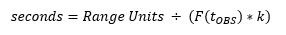

Tracking Data Types for Orbit Determination — This section describes tracking data types and file formats for orbit determination.
GMAT supports the following measurement types for orbit determination.
| GMAT Measurement Type Name | Measurement Description | Measurement Units |
|---|---|---|
| Azimuth, Elevation | Antenna pointing angles, for antennas using Az/El mounts. The geometry for Azimuth and Elevation angles is depicted in Figure 9-3 of Reference 1. Azimuth is defined to vary from 0 to 360 degrees. Azimuth is 0 along the North axis and increases in the East direction. Elevation is defined to vary from -90 to 90 degrees. Elevation is zero in the North/East plane and increases in the Zenith direction. | Degrees |
| BRTS_Doppler | Two-way coherent Doppler tracking from the NASA Tracking and Data Relay Satellite System Bilateration Ranging Transponder System (BRTS). | Hertz |
| BRTS_Range | Two-way coherent range tracking from the NASA Tracking and Data Relay Satellite System Bilateration Ranging Transponder System (BRTS). | Kilometers |
| DSN_PNRange | DSN pseudo-noise ranging (TRK-2-34 data type 14). | Range Units |
| DSN_SeqRange | DSN sequential ranging (TRK-2-34 data type 7). | Range Units |
| DSN_TCP | DSN total count phase (TRK-2-34 data type 17) measurements, implemented as a derived "Doppler" type measurement using successive phase measurements. This measurement type is used for both two-way and three-way tracking. See the notes below for details. | Hertz |
| GPS_PosVec | Earth-fixed position vectors from a spacecraft on-board GPS receiver. | Kilometers |
| Range | Two-way transponder range. A round-trip range measurement that includes the Spacecraft Transponder.HardwareDelay. This measurement type may be used for ground-to-space and inter-spacecraft (also called crosslink) tracking. See the notes below for details. | Kilometers |
| Range_Skin | Two-way non-transponder range. A round-trip range measurement that does not include the Spacecraft Transponder.HardwareDelay. This measurement type is appropriate for radar and other skin-tracking measurements. | Kilometers |
| RangeRate | Two-way coherent transponder range-rate. This is modeled as the difference between range measurements at the end and start of the Doppler count interval, divided by the length of the count interval. The measurement is time-tagged at the end of the interval. This measurement type may be used for ground-to-space and inter-spacecraft (space-to-space, also called crosslink) tracking. This measurement type is used for both two-way and three-way tracking. See the notes below for details. | Kilometers/sec |
| SN_Doppler | Two-way coherent user (on-orbit) Doppler tracking from the NASA Tracking and Data Relay Satellite (Space Network) System. | Hertz |
| SN_Doppler_Rtn | One-way non-coherent user return link Doppler tracking from the NASA Tracking and Data Relay Satellite (Space Network/Space Relay) System. SN_Doppler_Rtn is a space-to-ground Doppler measurement that originates at a user spacecraft, is received by a TDRS spacecraft, and relayed by the TDRS to a TDRS ground station. | Hertz |
| SN_DOWD | Differenced one-way return Doppler tracking from the NASA Tracking and Data Relay Satellite (Space Network/Space Relay) System. SN_DOWD measurements are formulated by differencing (subtracting) simultaneous TDRS one-way return Doppler measurements | Hertz |
| SN_Range | Two-way coherent user (on-orbit) range tracking from the NASA Tracking and Data Relay Satellite (Space Network) System. | Kilometers |
| XEast, YNorth | Antenna pointing angles, for antennas using an X/Y mount with the X rotation axis (the axis we rotate by angle XEast) oriented to the North. The geometry for XEast and YNorth angles is depicted in Figure 9-4 of Reference 1. Both angles are zero when the antenna is pointed to the zenith. XEast is defined to vary from -180 to +180 degrees. YNorth is defined to vary from -90 to +90 degrees. | Degrees |
| XSouth, YEast | Antenna pointing angles, for antennas using an X/Y mount with the X rotation axis (the axis we rotate by angle XSouth) oriented to the East. The geometry for XSouth and YEast angles is depicted in Figure 9-5 of Reference 1. Both angles are zero when the antenna is pointed to the zenith. XSouth is defined to vary from -180 to +180 degrees. YEast is defined to vary from -90 to +90 degrees. | Degrees |
The GMAT measurement type names listed are the string names to be used in instances of ErrorModel, AcceptFilter, RejectFilter, and TrackingFileSet, and in the GMAT GMD-format tracking data file to identify each measurement type to GMAT.
GMAT supports simulation and estimation of inter-spacecraft (also called "crosslink") tracking for some measurement types. These measurements are tracking observations consisting of range or Doppler/range-rate tracking between two spacecraft orbiting the same or different gravitational bodies. Inter-spacecraft tracking is currently supported for the Range and RangeRate measurement types. The formatting of GMAT tracking data files for inter-spacecraft tracking is identical to the associated ground-to-space measurement, with the exception that inter-spacecraft measurements use different observation type index numbers, as indicated below for each supported measurement type.
To configure two spacecraft for inter-spacecraft tracking, the "tracking" spacecraft must be assigned Transmitter and Receiver objects. The tracking spacecraft Receiver is then configured with the proper ErrorModels for the inter-spacecraft tracking. The measurement time tag for each inter-spacecraft measurement is the TAIModJulian measurement receive time at the tracking spacecraft.
See also Simulate and Estimate Inter-Spacecraft Tracking for a tutorial on simulating and estimating an orbit using inter-spacecraft tracking. Since the spacecraft participating in inter-spacecraft tracking may be in significantly different orbit regimes and each may require unique force modeling, GMAT supports specification of individual force models and propagators for each participant. See the Propagator fields of the Simulator, BatchEstimator, and ExtendedKalmanFilter resources for details on configuring multiple propagators.
GMAT uses a native ASCII tracking data file format called a “GMAT Measurement Data File”, or GMD file. Each GMD file consists of a series of space-delimited ASCII records. Details of the GMD file format for each observation type are provided in the following sections. A single GMD file may contain one or more of the record types described below, but ramp records must be in a separate file.
For further details on the TRK-2-34 raw data formats referenced below, please consult Reference 2.
All angle measurement types (Azimuth, Elevation, XEast, YNorth, XSouth, and YEast) share the same GMD file format. The generic angle observation is measured in degrees and represents rotation angles in the topocentric reference frame depicted in Figure 9-2 of Reference 1. The GMD record format for angle observation data is shown in the table below.
| Field | Description |
|---|---|
| 1 | Observation receive time in TAIModJulian |
| 2 | Observation type name - Azimuth, Elevation, XEast, YNorth, XSouth, or YEast |
| 3 | Observation type index number:
|
| 4 | Downlink Ground station pad ID |
| 5 | Spacecraft ID |
| 6 | Angle measurement in degrees |
A sample of GMD data records for Azimuth and Elevation data is shown below.
% - 1 - - 2 - 3 4 5 - 6 - 26088.5524768518518518444200 Azimuth 9016 MAD LEOSat 4.8265973546050333e+001 26088.5524768518518518444200 Elevation 9017 MAD LEOSat 1.2679724467383584e+001 26088.5531712962962962888639 Azimuth 9016 MAD LEOSat 5.9562253624641066e+001 26088.5531712962962962888639 Elevation 9017 MAD LEOSat 1.6962633728400046e+001 26088.5538657407407407333080 Azimuth 9016 MAD LEOSat 7.4485459451069659e+001 26088.5538657407407407333080 Elevation 9017 MAD LEOSat 2.0586055229649272e+001 26088.5545601851851851777532 Azimuth 9016 MAD LEOSat 9.2442509281488796e+001 26088.5545601851851851777532 Elevation 9017 MAD LEOSat 2.2241223403621646e+001
The Bilateration Ranging Transponder System (BRTS) consists of a collection of transponders fixed to the surface of the Earth at various locations. TDRS satellites track the BRTS transponders as if they were on-orbit spacecraft. Given the known location of the BRTS transponder, the resulting range and Doppler measurements can be used to determine the TDRS orbit. BRTS measurements are effectively the same as SN User measurements (see below) in that the BRTS on the ground acts identically to an SN user in space.
Please see the note below regarding rules for assigning TDRS spacecraft IDs.
The measurement path for BRTS_Range and BRTS_Doppler originates at a TDRSS ground terminal, proceeds along an uplink leg to a TDRSS spacecraft, and is relayed by the TDRS along the forward leg to a BRTS antenna on the ground. The BRTS transponder receives and retransmits the signal along a return path to (usually the same) TDRSS spacecraft, which then relays the signal along the downlink path to a TDRSS ground terminal (usually the same as the transmit ground station).
The GMD record format for BRTS_Doppler observation data is shown in the table below.
| Field | Description |
|---|---|
| 1 | Observation receive time in TAIModJulian |
| 2 | Observation type name - BRTS_Doppler |
| 3 | Observation type index number - 9025 = BRTS_Doppler |
| 4 | Measurement path. The format of the measurement path is { XmitGroundStation ForwardTDRS BRTSGroundStation ReturnTDRS RecvGroundStation } |
| 5 | Nominal BRTS transmit frequency in Hertz |
| 6 | BRTS transmit frequency band indicator - 0 = unknown, 1 = S-band, 2 = X-band, 3 = Ka-band, 4 = Ku-band, 5 = L-band |
| 7 | TDRS Service ID - 'SA1', 'SA2', or 'MA' |
| 8 | Tracker type for MA services (0 = legacy, 1 = TDRS-K) |
| 9 | S-Band Multiple Access Return (SMAR) downlink frequency ID |
| 10 | Doppler count interval in seconds |
| 11 | Doppler observation in Hertz |
A sample of GMD data records for BRTS Doppler data is shown below.
% - 1 - - 2 - 3 - 4 - - 5 - 6 7 8 9 - 10 - - 11 -
23585.500370370 BRTS_Doppler 9025 { 48 TDRS12 148 TDRS12 48 } 3.000000000000000e+09 1 SA1 0 0 10.000000 -1.3677498921896984e+10
23585.500370370 BRTS_Doppler 9025 { 48 TDRS12 152 TDRS12 48 } 3.000000000000000e+09 1 SA1 0 0 10.000000 -1.3677499155046673e+10
23585.507314814 BRTS_Doppler 9025 { 48 TDRS12 148 TDRS12 48 } 3.000000000000000e+09 1 SA1 0 0 10.000000 -1.3677498755754671e+10
23585.507314814 BRTS_Doppler 9025 { 48 TDRS12 152 TDRS12 48 } 3.000000000000000e+09 1 SA1 0 0 10.000000 -1.3677499026034889e+10
The GMD record format for BRTS Range observation data is shown in the table below.
| Field | Description |
|---|---|
| 1 | Observation receive time in TAIModJulian |
| 2 | Observation type name - BRTS_Range |
| 3 | Observation type index number - 9027 = BRTS_Range |
| 4 | Measurement path. The format of the measurement path is { XmitGroundStation ForwardTDRS BRTSGroundStation ReturnTDRS RecvGroundStation } |
| 5 | Total round-trip range measurement in kilometers |
A sample of GMD data records for BRTS Range data is shown below.
% - 1 - - 2 - 3 - 4 - - 5 -
29002.736215277777777 BRTS_Range 9027 {47 TDRS11 1311 TDRS11 47} +1.625344877538e+05
29002.736226851851851 BRTS_Range 9027 {47 TDRS11 1311 TDRS11 47} +1.625345659996e+05
29002.736238425925925 BRTS_Range 9027 {47 TDRS11 1311 TDRS11 47} +1.625346436459e+05
29002.736250000000000 BRTS_Range 9027 {47 TDRS11 1311 TDRS11 47} +1.625347218917e+05
29002.736261574074074 BRTS_Range 9027 {47 TDRS11 1311 TDRS11 47} +1.625348010369e+05
DSN TRK-2-34 pseudo-noise ranging employs the DSN_PNRange measurement type. DSN_PNRange is an ambiguous range observation measured in range units. Computation of the unambiguous round-trip range is performed by GMAT internally using the predicted spacecraft state and the range modulo value supplied in the GMD file. Note that if the initial spacecraft state is very poor, it is possible that an incorrect number of range intervals may be computed, resulting in computation of an incorrect measured round-trip range. This can generally be remedied by supplying a more accurate initial state, if one is available. The GMD record format for DSN_PNRange tracking data is shown in the table below.
| Field | Description |
|---|---|
| 1 | Observation receive time in TAIModJulian |
| 2 | Observation type name - DSN TRK-2-34 type 14 Pseudo-Noise Range = DSN_PNRange |
| 3 | Observation type index number - 9033 = DSN_PNRange |
| 4 | Tracking measurement path. The format is { XmitGroundStation Spacecraft RecvGroundStation } |
| 5 | Range observable in range units (meas_rng value from the TRK-2-34 PN range tracking CHDO) |
| 6 | Transmit delay in seconds. This is the sum ul_stn_cal + ul_zheight_corr, where ul_stn_cal is obtained from the PN range tracking CHDO and ul_zheight_corr is obtained from CHDO 134. The value of ul_stn_cal should be converted from range units to seconds according to the method shown below. |
| 7 | Receive delay in seconds. This is the sum dl_stn_cal + dl_zheight_corr, where dl_stn_cal is obtained from the PN range tracking CHDO and dl_zheight_corr is obtained from CHDO 134. The value of dl_stn_cal should be converted from range units to seconds according to the method shown below. |
| 8 | Uplink frequency band indicator - 0 = unknown, 1 = S-band, 2 = X-band, 3 = Ka-band, 4 = Ku-band, 5 = L-band. This is the ul_band value from CHDO 134. |
| 9 | Downlink frequency band indicator - 0 = unknown, 1 = S-band, 2 = X-band, 3 = Ka-band, 4 = Ku-band, 5 = L-band. This is the vld_dl_band value from CHDO 134. |
| 10 | Transmit frequency in Hz. See notes below. |
| 11 | Range modulo value (rng_modulo from TRK-2-34 PN range tracking CHDO) |
The uplink (ul_stn_cal) and downlink (dl_stn_cal) station calibration values must be converted to seconds and added to the respective z-height corrections (already in seconds). The conversion of station calibration values from range units to seconds requires the transmit frequency at the time of the observation. This is found by identifying the nearest ramp record prior to the observation time and using the transmit frequency and frequency rate from that record to determine the transmit frequency at the observation time. The conversion to from range units to seconds is then given by the equation shown below, where k = 1/2 for S-band and k = 221/1498 for X-Band.

The transmit frequency specified in the TRK-2-34 range data GMD file is only used if a frequency ramp table is not available. If a transmit frequency ramp record file is provided on the TrackingFileSet.RampTable field, the transmit frequency will be determined from the ramp table and the frequency specified in the range data GMD file will be ignored. A sample of GMD data records for TRK-2-34 Pseudo-Noise Range data is shown below.
% - 1 - - 2 - 3 - 4 - - 5 - - 6 - - 7 - 8 9 - 10 - - 11 -
29899.9861921296287619043142 DSN_PNRange 9033 { 26 23 26 } 3.5177653473651981e+08 8.1677625136844035e-05 8.8413709125097467e-04 1 1 2.0410472153173406e+09 5.1684864000000000e+08
29899.9863078703710925765336 DSN_PNRange 9033 { 26 23 26 } 3.5198542211253548e+08 8.1677625439244134e-05 8.8413709453168197e-04 1 1 2.0410472077438405e+09 5.1684864000000000e+08
29899.9864236111097852699459 DSN_PNRange 9033 { 26 23 26 } 3.5219423880677605e+08 8.1677625741644234e-05 8.8413709781238916e-04 1 1 2.0410472001703405e+09 5.1684864000000000e+08
29899.9865393518521159421653 DSN_PNRange 9033 { 26 23 26 } 3.5240297588308334e+08 8.1677626044044334e-05 8.8413710109309625e-04 1 1 2.0410471925968406e+09 5.1684864000000000e+08
GMAT determines a computed PN range value by the following process:
The GMD record measurement observation time represents the time the signal reached the receiver electronics. The time the signal arrived at the antenna is obtained by subtracting the GMD record receive delay from the GMD record observation receive time.
The transmit time and total round-trip light time are obtained by solving the light-time equation starting from the adjusted receive time. The light time solution yields the time the signal left the antenna at transmission.
The time the signal left the antenna at transmission is adjusted by subtracting the transmit delay to obtain the time the signal left the transmitting antenna electronics.
The frequency is integrated, using the ramp table if applicable, between the electronics transmit and receive times. This yields the total round-trip signal path in range units.
DSN TRK-2-34 sequential ranging employs the DSN_SeqRange measurement type. DSN_SeqRange is an ambiguous range observation measured in range units. Computation of the unambiguous round-trip range is performed by GMAT internally using the computed spacecraft state and the range modulo value supplied in the GMD file. Note that if the initial spacecraft state is very poor, it is possible that an incorrect number of range intervals may be computed, resulting in computation of an incorrect measured round-trip range. This can generally be remedied by supplying a more accurate initial state, if one is available. The GMD record format for DSN_SeqRange tracking data is shown in the table below.
| Field | Description |
|---|---|
| 1 | Observation receive time in TAIModJulian |
| 2 | Observation type name - DSN TRK-2-34 Type 7 Sequential Range = DSN_SeqRange |
| 3 | Observation type index number - 9004 = DSN_SeqRange |
| 4 | Downlink Ground station pad ID or tracking spacecraft ID |
| 5 | Spacecraft ID |
| 6 | Range observable (meas_rng or rng_obs from TRK-2-34 Sequential Range CHDO, with appropriate corrections applied) |
| 7 | Uplink frequency band indicator - 0 = unknown, 1 = S-band, 2 = X-band, 3 = Ka-band, 4 = Ku-band, 5 = L-band |
| 8 | Uplink frequency in Hz |
| 9 | Range modulo value (rng_modulo from TRK-2-34 Sequential Range CHDO) |
The transmit frequency specified in the TRK-2-34 range data GMD file is only used if a frequency ramp table is not available. If a transmit frequency ramp record file is provided on the TrackingFileSet.RampTable field, the transmit frequency will be determined from the ramp table and the frequency specified in the range data GMD file will be ignored. A sample of GMD data records for TRK-2-34 Sequential Range data is shown below.
% - 1 - - 2 - 3 4 5 - 6 - 7 - 8 - - 9 - 27236.157789352 DSN_SeqRange 9004 45 59 +9.810325186004e+005 1 +2.091414432000e+009 +1.048576000000e+006 27236.158240741 DSN_SeqRange 9004 45 59 +5.813243487947e+005 1 +2.091414432000e+009 +1.048576000000e+006 27236.158692130 DSN_SeqRange 9004 45 59 +1.863046908683e+005 1 +2.091414432000e+009 +1.048576000000e+006 27236.159143519 DSN_SeqRange 9004 45 59 +8.450116485521e+005 1 +2.091414432000e+009 +1.048576000000e+006
GMAT determines a computed PN range value by the following process:
where
DSN TRK-2-34 total count phase employs the DSN_TCP measurement type. This measurement type is used for both two-way and three-way tracking. As shown below, the GMAT Doppler measurement type, measured in Hz, is derived from successive total count phase (TCP) observations.
where
The GMD record format for DSN_TCP tracking data is shown in the table below.
| Field | Description |
|---|---|
| 1 | Observation receive time in TAIModJulian |
| 2 | Observation type name - DSN TRK-2-34 Type 17 Total Count Phase = DSN_TCP |
| 3 | Observation type index number - 9006 = DSN_TCP |
| 4 | Tracking measurement path. The format is { XmitGroundStation Spacecraft RecvGroundStation }. For three-way tracking, the transmit and receive ground stations are different. |
| 5 | Uplink frequency band indicator - 0 = unknown, 1 = S-band, 2 = X-band, 3 = Ka-band, 4 = Ku-band, 5 = L-band |
| 6 | Doppler count interval in seconds |
| 7 | Observation value - Doppler observable derived from Total Count Phase (TCP) TRK-2-34 Type 17 measurements |
Please note the new format for representing the tracking
measurement path. The old format RecvGroundStation
Spacecraft will continue to work but is deprecated and may be
removed in a future release.
A sample of GMD data records for TRK-2-34 total count phase derived Doppler data is shown below.
% - 1 - - 2 - 3 - 4 - 5 6 - 7 -
27226.011944444 DSN_TCP 9006 { 15 6241 15 } 1 10 -2.2445668331979342e+09
27226.012060185 DSN_TCP 9006 { 15 6241 15 } 1 10 -2.2445668330920730e+09
27226.012175926 DSN_TCP 9006 { 15 6241 15 } 1 10 -2.2445668329843016e+09
27226.012291667 DSN_TCP 9006 { 15 6241 15 } 1 10 -2.2445668328729177e+09GMAT determines a computed TCP Doppler value by the following process:
where
Note that (t3e - t3s) is known as the Doppler Count Interval. This value is read from the GMD file record (for estimation) and is an input field, SimDopplerCountInterval on the TrackingFileSet resource for simulation.
GMAT supports DSN tracking utilizing both constant and ramped transmit frequencies. If the transmit frequency is constant, GMAT will use the transmit frequency specified on the DSN_SeqRange or DSN_PNRange measurement records for the computation of the range observation and a ramp table file is not required. If the transmit frequency is ramped, the user must generate a GMD file of ramp records from TRK-2-34 Type 9 raw data, and provide the GMD ramp table on the TrackingFileSet.RampTable object field. If a ramp table is provided, GMAT ignores the frequency specified on the range records and instead computes the transmit frequency from the ramp records.
The record format for ground-based range-rate tracking data is shown in the table below.
| Field | Description |
|---|---|
| 1 | Ramp record epoch in TAIModJulian |
| 2 | Ground station pad ID |
| 3 | Spacecraft ID |
| 4 | Uplink frequency band indicator - 0 = unknown, 1 = S-band, 2 = X-band, 3 = Ka-band, 4 = Ku-band, 5 = L-band. (This is the ul_band value from CHDO 132). |
| 5 | Ramp type - 0 = snap, 1 = start of new ramp, 2 = medial report, 3 = periodic report, 4 = end of ramps, 5 = ramping terminated by operator, 6 = invalid/unknown (ramp_type from the TRK-2-34 ramp tracking CHDO) |
| 6 | Ramp frequency in Hz (ramp_freq from the TRK-2-34 ramp tracking CHDO) |
| 7 | Ramp rate in Hz/sec (ramp_rate from the TRK-2-34 ramp tracking CHDO) |
A sample GMD ramp file is shown below.
% - 1 - 2 3 4 5 - 6 - - 7 - 27238.640625000 34 234 2 1 +7.186571173393e+09 +6.010599999990e-01 27238.654513889 34 234 2 1 +7.186571894665e+09 +5.822699999990e-01 27238.659664352 34 234 2 3 +7.186572153775e+09 +5.822699999990e-01 27238.668402778 34 234 2 1 +7.186572593389e+09 +5.590199999990e-01 27238.682291667 34 234 2 1 +7.186573264213e+09 +5.315100000000e-01
GPS-derived Earth-fixed position vectors employ the GPS_PosVec measurement type. The fixed frame assumed for the vector components is GMAT's EarthFixed reference frame (see CoordinateSystem). The record format for GPS_PosVec tracking data is shown in the table below.
| Field | Description |
|---|---|
| 1 | Observation receive time in TAIModJulian |
| 2 | Observation type name - GPS_PosVec |
| 3 | Observation type index number - 9014 = GPS_PosVec |
| 4 | GPS receiver ID |
| 5 | Earth-fixed position X component (km) |
| 6 | Earth-fixed position Y component (km) |
| 7 | Earth-fixed position Z component (km) |
The GMAT user should be aware that the GPS_PosVec measurement is currently treated as a vector quantity. The vector components are not treated as independent observations. If any component of a vector observation (X, Y, or Z) is edited from the solution by the user or by autonomous sigma editing, the other components associated with that observation will also be edited out, regardless of their quality.
A sample GMD GPS_PosVec file is shown below.
% - 1 - - 2 - 3 4 - 5 - - 6 - - 7 - 26112.586516203704 GPS_PosVec 9014 800 -3575.594419 -5758.828897 1440.891615 26112.587210648147 GPS_PosVec 9014 800 -3257.134099 -5984.420574 1265.579859 26112.587905092594 GPS_PosVec 9014 800 -2926.558570 -6187.149174 1084.793371 26112.588599537037 GPS_PosVec 9014 800 -2585.076391 -6366.230816 899.311591 26112.589293981480 GPS_PosVec 9014 800 -2233.950454 -6520.997704 709.941434
Two-way range measurements that pass through a Spacecraft transponder use the Range measurement type. Range is an unambiguous round-trip range observation measured in kilometers. The measurement model in GMAT will include the Spacecraft Transponder.HardwareDelay, but the HardwareDelay may be set to zero. The GMD record format for Range data is shown in the table below.
| Field | Description |
|---|---|
| 1 | Observation receive time in TAIModJulian |
| 2 | Observation type name - Range |
| 3 | Observation type index number
|
| 4 | Downlink ground station pad ID or tracking spacecraft ID |
| 5 | Spacecraft ID |
| 6 | Two-way (round-trip) range observation in kilometers |
A sample of GMD data records for Range data is shown below.
% - 1 - - 2 - 3 4 5 - 6 - 27182.022395833334 Range 9002 117 322 +7.447171160686e+04 27182.022511574076 Range 9002 117 322 +7.447456623065e+04 27182.022627314815 Range 9002 117 322 +7.447742325277e+04 27182.022743055557 Range 9002 117 322 +7.448028087448e+04
Two-way range measurements that do not pass through a Spacecraft transponder use the Range_Skin measurement type. Range_Skin is an unambiguous round-trip range observation measured in kilometers. Users of tracking data in raw 46-character or NORAD B3 format should be aware that these formats encode a one-way range value, so the reported range measurement must be converted to a two-way value (by multiplying the observed range by 2) when formatting this data into a GMD file. The GMD record format for Range_Skin data is shown in the table below.
| Field | Description |
|---|---|
| 1 | Observation receive time in TAIModJulian |
| 2 | Observation type name - Range_Skin |
| 3 | Observation type index number - 9024 = Range_Skin |
| 4 | Receive ground station pad ID |
| 5 | Spacecraft ID |
| 6 | Two-way (round-trip) range observation in kilometers |
A sample of GMD data records for Range_Skin data is shown below.
% - 1 - - 2 - 3 4 5 - 6 - 27182.022395833334 Range_Skin 9024 117 322 +7.447171160686e+04 27182.022511574076 Range_Skin 9024 117 322 +7.447456623065e+04 27182.022627314815 Range_Skin 9024 117 322 +7.447742325277e+04 27182.022743055557 Range_Skin 9024 117 322 +7.448028087448e+04
Two-way coherent range-rate tracking uses the RangeRate measurement type. RangeRate is the difference of the range observation at the end of the averaging interval and the start of the averaging interval, divided by the averaging interval duration. The time tag is at the end of the averaging interval. The GMD record format for RangeRate data is shown in the table below.
| Field | Description |
|---|---|
| 1 | Observation receive time in TAIModJulian |
| 2 | Observation type name - RangeRate |
| 3 | Observation type index number
|
| 4 | Tracking measurement path. The format is { XmitGroundStation Spacecraft RecvGroundStation }. For three-way tracking, the transmit and receive stations are different. |
| 5 | Uplink frequency band indicator - 0 = unknown, 1 = S-band, 2 = X-band, 3 = Ka-band, 4 = Ku-band, 5 = L-band |
| 6 | Doppler averaging interval in seconds |
| 7 | Range-rate observation in kilometers/second |
Please note the new format for representing the tracking
measurement path. The old format RecvGroundStation
Spacecraft will continue to work but is deprecated and may be
removed in a future release.
A sample of GMD data records for RangeRate data is shown below.
% - - 1 - - 2 - 3 - 4 - 5 6 - 7 -
21544.500370370370 RangeRate 9012 { CAN SAT USPS } 1 10 -3.8108162251433930e-02
21544.501064814814 RangeRate 9012 { CAN SAT USPS } 1 10 -3.7958430795696073e-02
21544.501759259259 RangeRate 9012 { CAN SAT USPS } 1 10 -3.7805598218522536e-02
21544.502453703703 RangeRate 9012 { CAN SAT USPS } 1 10 -3.7655205945919069e-02
The Tracking and Data Relay Satellite System (TDRSS) consists of a constellation of spacecraft in geosynchronous orbit that provides near-continuous coverage of low-earth orbit. The TDRSS spacecraft are used to relay data from low-earth orbiting spacecraft to the ground. TDRSS spacecraft are also used to track low-earth spacecraft, and the TDRSS provides a number of measurement types that are supported for OD in GMAT.
Certain constants in the TDRSS measurement model depend on the user service (SA1, SA2, or MA) and TDRS spacecraft ID. The user service is explicitly indicated in the GMD file tracking data records. GMAT will attempt to determine the TDRS spacecraft ID from the Spacecraft resource Id parameter. For TDRS measurements to function properly in all cases, the user must observe one of the following conventions when assigning the Spacecraft.Id parameter for a TDRS spacecraft.
The user may specify the TDRS SIC as the TDRS spacecraft Id. GMAT will infer the TDRS ID from the proper TDRS spacecraft SIC.
Optionally, the user may specify the TDRS Spacecraft.Id in the format "<string><nn>", where <nn> is a one- or two-digit number indicating the TDRS ID. The <string> portion of the ID may be any string. For example, setting the spacecraft Id parameter to "TDRS09", "TD09", or "TDRS9" all properly identify the spacecraft as TDRS-9 (TDRS ID = 9).
Failing to follow one of these conventions may result in some Doppler measurements being computed incorrectly. GMAT will issue a warning message in the log file if it is unable to determine the TDRS ID from the spacecraft Id parameter.
For all TDRS measurement types, media (ionosphere and troposphere) corrections are only applied on the TDRS to ground tracking leg. No media corrections are computed on user to TDRS (space to space) tracking legs.
TDRSS coherent two-way Doppler tracking uses the SN_Doppler measurement type. The measurement path for SN_Doppler originates at a TDRSS ground terminal, proceeds along an uplink leg to a TDRSS spacecraft, and is relayed by the TDRS along the forward leg to the user spacecraft. The user spacecraft receives and retransmits the signal along a return path to (usually the same) TDRSS spacecraft, which then relays the signal along the downlink path to a TDRSS ground terminal (usually the same as the transmit ground station). The GMD record format for SN_Doppler data is shown in the table below.
| Field | Description |
|---|---|
| 1 | Observation receive time in TAIModJulian |
| 2 | Observation type name - SN_Doppler |
| 3 | Observation type index number - 9013 = SN_Doppler |
| 4 | Measurement path; the format is { XmitGroundStation ForwardTDRS UserSpacecraft ReturnTDRS RecvGroundStation }. |
| 5 | Nominal user transmit frequency in Hertz |
| 6 | User transmit frequency band indicator - 0 = unspecified, 1 = S-band, 3 = K-band |
| 7 | TDRS service identifier; SA1, SA2, or MA. |
| 8 | Tracker type for MA services (0 = legacy, 1 = TDRS-K) |
| 9 | S-Band Multiple Access Return (SMAR) downlink frequency ID |
| 10 | Doppler count interval in seconds |
| 11 | Doppler measurement in Hertz |
A sample of GMD data records for SN_Doppler data is shown below.
% - 1 - - 2 - 3 - 4 - - 5 - 6 7 8 9 - 10 - - 11 -
27235.503981481481481 SN_Doppler 9013 { 47 TDRS10 1874 TDRS10 47 } 2.287500960000e+09 1 SA2 1 0 1.000000 81582.008000
27235.503993055555555 SN_Doppler 9013 { 47 TDRS10 1874 TDRS10 47 } 2.287500960000e+09 1 SA2 1 0 1.000000 81491.748000
27235.504004629629629 SN_Doppler 9013 { 47 TDRS10 1874 TDRS10 47 } 2.287500960000e+09 1 SA2 1 0 1.000000 81401.316000
27235.504016203703703 SN_Doppler 9013 { 47 TDRS10 1874 TDRS10 47 } 2.287500960000e+09 1 SA2 1 0 1.000000 81310.708000
27235.504027777777777 SN_Doppler 9013 { 47 TDRS10 1874 TDRS10 47 } 2.287500960000e+09 1 SA2 1 0 1.000000 81219.995000
TDRSS non-coherent one-way user return Doppler tracking uses the SN_Doppler_Rtn measurement type. The measurement path for SN_Doppler_Rtn originates at an on-orbit user spacecraft, proceeds along a return leg to a TDRSS spacecraft, and is relayed by the TDRS along the downlink leg to TDRSS ground terminal.
This measurement is formulated as a combination of the one-way average range-rate from the user spacecraft to the TDRS to the ground, and the two-way average range-rate from the ground to TDRS to ground. Please note that GMAT formulates the light-time solution in the Solar System Barycentric (SSB) frame and this requires modeling of the ET-TAI correction on the one-way user to TDRS to ground leg. GMAT will automatically apply ET-TAI on that leg regardless of the setting of the TrackingFileSet UseETminusTAI flag. This flag will apply as set by the user (True or False) to the two-way range-rate component of the measurement.
The GMD record format for SN_Doppler_Rtn data is shown in the table below.
| Field | Description |
|---|---|
| 1 | Observation receive time in TAIModJulian |
| 2 | Observation type name - SN_Doppler_Rtn |
| 3 | Observation type index number - 9026 |
| 4 | Measurement path; the format is { UserSpacecraft, ReturnTDRS, RecvGroundStation } |
| 5 | Nominal user transmit frequency in Hertz |
| 6 | User transmit frequency band indicator - 0 = unspecified, 1 = S-band, 3 = K-band |
| 7 | TDRS service identifier; 'SA1', 'SA2', or 'MA'. |
| 8 | Tracker type for MA services (0 = legacy, 1 = TDRS-K) |
| 9 | S-Band Multiple Access Return (SMAR) downlink frequency ID |
| 10 | Doppler count interval in seconds |
| 11 | Doppler measurement in Hertz |
A sample of GMD data records for SN_Doppler_Rtn data is shown below.
% - 1 - - 2 - 3 - 4 - - 5 - 6 7 8 9 - 10 - - 11 -
23585.5184259259259259259262 SN_Doppler_Rtn 9026 { 1874 1411 48 } 3.000000000000000e+09 1 SA1 0 0 10.000000 -1.3677461877950760e+10
23585.5198148148148148148142 SN_Doppler_Rtn 9026 { 1874 1411 48 } 3.000000000000000e+09 1 SA1 0 0 10.000000 -1.3677458521391161e+10
23585.5212037037037037037036 SN_Doppler_Rtn 9026 { 1874 1411 48 } 3.000000000000000e+09 1 SA1 0 0 10.000000 -1.3677455761216986e+10
23585.5225925925925925925927 SN_Doppler_Rtn 9026 { 1874 1411 48 } 3.000000000000000e+09 1 SA1 0 0 10.000000 -1.3677453673831347e+10
23585.5239814814814814814820 SN_Doppler_Rtn 9026 { 1874 1411 48 } 3.000000000000000e+09 1 SA1 0 0 10.000000 -1.3677452330975290e+10
TDRSS differenced one-way return Doppler tracking uses the SN_DOWD measurement type. SN_DOWD is formulated by differencing simultaneous SN one-way return Doppler measurements. Formulation of SN_DOWD requires two simultaneous SN one-way return tracking passes that have at least some coincident time tags. GMAT models each individual one-way return Doppler strand using the SN_Doppler_Rtn measurement model and then computes the arithmetic difference of the modeled one-way Doppler measurements to obtain the computed DOWD measurement.
The GMD record format for SN_DOWD data is shown in the table below. Note that the differencing of simultaneous one-way measurements must be performed external to GMAT during formulation of the GMD records.
| Field | Description |
|---|---|
| 1 | Observation receive time in TAIModJulian |
| 2 | Observation type name - SN_DOWD |
| 3 | Observation type index number - 9028 |
| 4 | Measurement path; the format is { UserSpacecraft, ReturnTDRS1, RecvGroundStation1, ReturnTDRS2, RecvGroundStation2 } |
| 5 | ReturnTDRS1 path nominal user transmit frequency in Hertz |
| 6 | ReturnTDRS1 path user transmit frequency band indicator - 0 = unspecified, 1 = S-band, 3 = K-band |
| 7 | ReturnTDRS1 path TDRS service identifier; 'SA1', 'SA2', or 'MA'. |
| 8 | ReturnTDRS1 path tracker type for MA services (0 = legacy, 1 = TDRS-K) |
| 9 | ReturnTDRS1 path S-Band Multiple Access Return (SMAR) downlink frequency ID |
| 10 | ReturnTDRS1 path Doppler count interval in seconds |
| 11 | ReturnTDRS2 path nominal user transmit frequency in Hertz |
| 12 | ReturnTDRS2 path user transmit frequency band indicator - 0 = unspecified, 1 = S-band, 3 = K-band |
| 13 | ReturnTDRS2 path TDRS service identifier; 'SA1', 'SA2', or 'MA'. |
| 14 | ReturnTDRS2 path tracker type for MA services (0 = legacy, 1 = TDRS-K) |
| 15 | ReturnTDRS2 path S-Band Multiple Access Return (SMAR) downlink frequency ID |
| 16 | ReturnTDRS2 path Doppler count interval in seconds |
| 17 | DOWD measurement in Hertz |
A sample of GMD data records for SN_DOWD data is shown below.
% - 1 - - 2 - 3 - 4 - - 5 - 6 7 8 9 - 10 - - 11 - 12 13 14 15 - 16 - - 17 -
29222.842465277779411 SN_DOWD 9028 { 7369 1411 49 1306 94 } 2.282300000000e+09 1 SA2 0 0 1.000000 2.282300000000e+09 1 SA1 0 0 1.000000 -7.6810850000E+03
29222.842476851852552 SN_DOWD 9028 { 7369 1411 49 1306 94 } 2.282300000000e+09 1 SA2 0 0 1.000000 2.282300000000e+09 1 SA1 0 0 1.000000 -7.7030220000E+03
29222.842488425925694 SN_DOWD 9028 { 7369 1411 49 1306 94 } 2.282300000000e+09 1 SA2 0 0 1.000000 2.282300000000e+09 1 SA1 0 0 1.000000 -7.7249500000E+03
29222.842499999998836 SN_DOWD 9028 { 7369 1411 49 1306 94 } 2.282300000000e+09 1 SA2 0 0 1.000000 2.282300000000e+09 1 SA1 0 0 1.000000 -7.7467780000E+03
29222.842511574075615 SN_DOWD 9028 { 7369 1411 49 1306 94 } 2.282300000000e+09 1 SA2 0 0 1.000000 2.282300000000e+09 1 SA1 0 0 1.000000 -7.7686560000E+03
TDRSS coherent two-way range tracking uses the SN_Range measurement type. The measurement path for SN_Range originates at a TDRSS ground terminal, proceeds along an uplink leg to a TDRSS spacecraft, and is relayed by the TDRS along the forward leg to the user spacecraft. The user spacecraft receives and retransmits the signal along a return path to (usually the same) TDRSS spacecraft, which then relays the signal along the downlink path to a TDRSS ground terminal (usually the same as the transmit ground station). The GMD record format for SN_Range data is shown in the table below.
| Field | Description |
|---|---|
| 1 | Observation receive time in TAIModJulian |
| 2 | Observation type name - SN_Range |
| 3 | Observation type index number - 9000 = SN_Range |
| 4 | Measurement path; the format is { XmitGroundStation, ForwardTDRS, UserSpacecraft, ReturnTDRS, RecvGroundStation } |
| 5 | Total round-trip range measurement in kilometers |
A sample of GMD data records for SN_Range data is shown below.
% - 1 - - 2 - 3 - 4 - - 5 -
27235.503958333333333 SN_Range 9000 {47 TDRS10 1874 TDRS10 47} +1.551416168318e+05
27235.503969907407407 SN_Range 9000 {47 TDRS10 1874 TDRS10 47} +1.551309765979e+05
27235.503981481481481 SN_Range 9000 {47 TDRS10 1874 TDRS10 47} +1.551203453578e+05
27235.503993055555555 SN_Range 9000 {47 TDRS10 1874 TDRS10 47} +1.551097282079e+05
27235.504004629629629 SN_Range 9000 {47 TDRS10 1874 TDRS10 47} +1.550991239491e+05
Moyer, Theodore D., Formulation for Observed and Computed Values of Deep Space Network Data Types for Navigation, (JPL Publication 00-7), Jet Propulsion Laboratory, California Institute of Technology, October 2000.
Shin, Dong., DSN Tracking System Data Archival Format, DSN Document 820-013, Module TRK-2-34, Rev. P, 2017.